산업안전기사 (2008-09-07 기출문제)
1과목: 안전관리론
1. 다음 중 헤링(Hering)의 착시현상에 해당하는 것은?
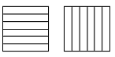
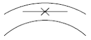
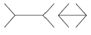
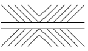
(정답률: 60%)

2. 맥그리거(Mcgregor)의 X, Y 이론에서 X 이론에 대한 관리처방으로 볼 수 없는 것은?
- 직무의 확장
- 권위주의적 리더십의 확립
- 경제적 보상 체제의 강화
- 면밀한 감독과 엄격한 통제
(정답률: 74%)
3. 근로자의 직무적성을 결정하는 심리검사의 특징에 대한 설명으로 틀린 것은?
- 특정한 시기에 모든 근로자들을 검사하고, 그 검사점수와 근로자의 직무평정척도를 상호 연관시키는 예언적 타당성을 갖추어야 한다.
- 검사의 관리를 위한 조건, 절차의 일관성과 통일성에 대한 심리검사의 표준화가 마련되어야 한다.
- 한 집단에 대한 검사응답의 일관성을 말하는 객관성을 갖추어야 한다.
- 심리검사의 결과를 해석하기 위해서는 개인의 성적을 다른 사람들의 성적과 비교할 수 있는 참조 또는 비교의 기준이 있어야 한다.
(정답률: 44%)
4. 교육훈련기법 중 off.J.T(off the Job Training)의 장점으로 볼 수 없는 것은?
- 외부의 전문가를 활용할 수 있다.
- 다수의 대상자에게 조직적 훈련이 가능하다.
- 특별교재, 교구, 시설을 유용하게 사용할 수 있다.
- 훈련에 필요한 업무의 계속성이 끊어지지 않는다.
(정답률: 78%)
5. 상시근로자를 400명 채용하고 있는 사업장에서 주당 40시간씩 1년간 50주를 작업하는 동안 재해가 180건 발생 하였고, 이에 따라 근로손실일수가 780일이었다. 이 사업장의 강도율은 약 얼마인가?
- 0.45
- 0.75
- 0.98
- 1.95
(정답률: 57%)
6. A 사업장의 연천인율이 10.8 이었다면 이 사업장의 도수율은 약 얼마인가?
- 5.4
- 4.5
- 3.7
- 1.8
(정답률: 75%)
7. 교육심리학의 학습이론에 관한 설명으로 옳은 것은?
- 파블로프(Pavlov)의 조건반사설은 맹목적 시행을 반복하는 가운데 자극과 반응이 결합하여 행동하는 것이다.
- 레윈(Lewin)의 장설은 후천적으로 얻게 되는 반사작용으로 행동을 발생시킨다는 것이다.
- 톨만(Tolman)의 기호형태설은 학습자의 머리 속에 인지적 지도 같은 인지구조를 바탕으로 학습하려는 것이다.
- 손다이크(Thorndike)의 시행착오설은 내적, 외적의 전체구조를 새로운 시점에서 파악하여 행동하는 것이다.
(정답률: 65%)
8. 다음 중 산업재해의 기본원인 4M에서 "Media" 에 해당 되는 것은?
- 작업방법의 부적절
- 점검, 정비의 부족
- 적성배치의 불충분
- 직장의 인간관계
(정답률: 58%)
9. 운동지각 현상 가운데 자동운동(autokinetic movement)이 발생하기 쉬운 조건이 아닌 것은?
- 광점이 작은 것
- 대상이 복잡한 것
- 빛의 강도가 작은 것
- 시야의 다른 부분이 어두운 것
(정답률: 66%)
10. 안전보건교육의 단계별 교육과정 중 근로자가 지켜야할 규정의 숙지를 위한 교육에 해당하는 것은?
- 지식교육
- 태도교육
- 문제해결교육
- 기능교육
(정답률: 60%)
11. 다음 중 주의의 특징으로 볼 수 없는 것은?
- 선택성
- 방향성
- 변동성
- 전진성
(정답률: 67%)
12. 산업안전보건법상 안전관리자의 업무에 해당하는 것은?
- 직업성질환 발생의 원인조사 및 대책수립
- 해당 사업장 안전교육계획의 수립 및 안전교육 실시에 관한 보좌 및 조언ㆍ지도
- 근로자의 건강장해의 원인조사와 재발방지를 위한 의학적 조치
- 해당 작업에서 발생한 산업재해에 관한 보고 및 이에 대한 응급조치
(정답률: 71%)
13. 산업안전보건법상 자체검사의 검사주기가 1년에 1회 이상인 기계ㆍ기구는?(관련 규정 개정전 문제로 기존 정답은 4번입니다. 여기서는 4번을 누르면 정답 처리 됩니다.)(관련 규정 개정전 문제로 여기서는 기존 정답인 4번을 누르면 정답 처리됩니다. 자세한 내용은 해설을 참고하세요.)
- 보일러
- 압력용기
- 건조설비
- 가스집합용접장치
(정답률: 69%)
14. 다음 중 교육훈련의 4단계를 올바르게 나열한 것은?
- 도입 - 적용 - 제시 - 확인
- 도입 - 확인 - 제시 - 적용
- 적용 - 제시 - 도입 - 확인
- 도입 - 제시 - 적용 - 확인
(정답률: 83%)
15. 산업안전보건법에 따른 안전ㆍ보건표지의 제작에 있어 안전ㆍ보건표지 속의 그림 또는 부호의 크기는 안전ㆍ보건 표지의 크기와 비례하여야 하며, 안전ㆍ보건표지 전체규격의 몇 % 이상이 되어야 하는가?
- 20%
- 30%
- 40%
- 50%
(정답률: 70%)
16. 다음 중 위험예지훈련 4R(라운드) 기법의 진행방법에서 3R(라운드)에 해당하는 것은?
- 목표설정
- 대책수립
- 본질추구
- 현상파악
(정답률: 66%)
17. 경험한 내용이나 학습된 행동을 다시 생각하여 작업에 적용하지 아니하고 방치함으로서 경험의 내용이나 인상이 약해지거나 소멸되는 현상을 무엇이라 하는가?
- 착각
- 훼손
- 망각
- 단절
(정답률: 78%)
18. 산업안전보건법상 사업내 안전ㆍ보건교육 중 근로자 정기 안전ㆍ보건교육의 교육 내용에 해당되지 않는 것은?
- 산업보건 및 직업병 예방에 관한 사항
- 유해・위험 작업환경 관리에 관한 사항
- 작업안전지도요령에 관한 사항
- 건강증진 및 질병 예방에 관한 사항
(정답률: 68%)
19. 인간의 의식 수준에 있어서 신뢰도가 가장 높은 상태는?
- phase l
- phase ll
- phase lll
- phase lv
(정답률: 61%)
20. 어느 사업장에서 해당년도에 총 660명의 재해자가 발생 하였다. 하인리히의 재해구성비율에 의하면 경상의 재해자는 몇 명으로 추정되겠는가?
- 58명
- 64명
- 600명
- 631명
(정답률: 75%)
2과목: 인간공학 및 시스템안전공학
21. 1촉광의 점광원으로부터 1m 떨어진 곡면에 비추는 광의 조도는 1촉광의 점광원으로부터 2m 떨어진 곡면에 비추는 광의 조도의 몇 배인가?
- 1/4
- 1/2
- 2
- 4
(정답률: 37%)
22. 다음 중 FTA에서 사용되는 minimal cut set 에 대한 설명으로 틀린 것은?
- 사고에 대한 시스템의 약점을 표현한다.
- 정상사상(Top사상)을 일으키는 최소의 집합이다.
- 시스템이 고장나지 않도록 하는 사상의 집합이다.
- 일반적으로 Fussell Algorithm을 이용한다.
(정답률: 61%)
23. 발생 확률이 동일한 64가지의 대안이 있을 때 얻을 수있는 총 정보량은 몇 bit 인가?
- 6
- 16
- 32
- 64
(정답률: 54%)
24. 다음 중 인체 측정치의 하위 백분위수(percentile)를 기준으로 설계하는 사례는?
- 선반의 높이
- 출입문의 높이
- 탈출구의 크기
- 그네의 지지하중
(정답률: 62%)
25. 다음 [보기]의 각 단계를 결함수분석법(FTA)에 의해 재해사례의 연구 순서대로 올바르게 나열한 것은?
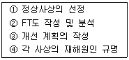
- ① → ② → ③ → ④
- ① → ④ → ② → ③
- ① → ③ → ② → ④
- ① → ④ → ③ → ②
(정답률: 56%)
26. FTA에서 사용되는 논리게이트 중 입력현상의 반대현상이 출력되는 것은?
- 우선적 AND 게이트
- 부정게이트
- 억제 게이트
- 배타적 OR 게이트
(정답률: 68%)
27. 다음 중 부품배치의 원칙에 해당하지 않는 것은?
- 희소성의 원칙
- 사용 빈도의 원칙
- 기능별 배치의 원칙
- 사용 순서의 원칙
(정답률: 76%)
28. 인간-기계 시스템에 관한 설명으로 틀린 것은?
- 수동 시스템에서 기계는 동력원을 제공하고 인간의 통제하에서 제품을 생산한다.
- 기계 시스템에서는 고도로 통합된 부품들로 구성되어 있으며, 일반적으로 변화가 거의 없는 기능들을 수행한다.
- 자동 시스템에서 인간은 감시, 정비, 보전 등의 기능을 수행한다.
- 자동 시스템에서 인간요소를 고려하여야 한다.
(정답률: 61%)
29. FMEA에서 고장의 발생확률을 β라 하고, β의 값이0 < β < 0.10 일 때 고장의 영향은 어떻게 분류되는가?
- 영향 없음
- 가능한 손실
- 예상되는 손실
- 실제의 손실
(정답률: 53%)
30. 다음 중 실내 면(面)의 추천 반사율이 가장 높은 것은?
- 벽
- 천정
- 가구
- 바닥
(정답률: 73%)
31. 인간-기계 시스템에서 인간이 기계로부터 정보를 받을때 청각적 장치보다 시각적 장치를 이용하는 것이 더 유리한 경우는?
- 정보가 간단하고 짧은 경우
- 정보가 후에 재참조되지 않는 경우
- 정보가 즉각적인 행동을 요구하지 않는 경우
- 수신자가 직무상 여러 곳으로 움직여야 하는 경우
(정답률: 70%)
32. 조종구(ball comtrol)의 값이 상당한 회전운동을 하는 선형조종장치의 조종-반응 비율(C/R비)을 올바르게 나타낸 것은? (단, 지레의 길이를 L, 조종장치기가 움직인 각도를 θ 라 한다.)
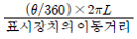
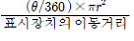
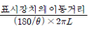
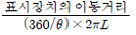
(정답률: 57%)
33. 다음 중 인간의 양립성에서 개념 양립성에 해당하는 것은?
- 조종장치를 오른쪽으로 돌리면 표시장치의 지침이 오른쪽으로 이동한다.
- 동력스위치에서 스위치를 위로 올리면 전원이 들어오고, 아래로 내리면 전원이 꺼진다.
- 가스버너에서 오른쪽 조리대는 오른쪽 조절장치로 왼쪽 조리대는 왼쪽 조절장치로 조정한다.
- 냉온수기에서 빨간색은 온수, 파란색은 냉수가 나온다.
(정답률: 66%)
34. 영상표시단말기 (VDT)의 취급시 화면의 바탕 색상이 검정색 계통일 때 주변 환경의 조도(Lux)로 가장 적절한 경우는?
- 100
- 200
- 400
- 600
(정답률: 39%)
35. 동일한 신뢰성을 가진 작업자로 운용되는 병렬시스템에서 작업자 1명의 신뢰도가 80% 일 때, 전체시스템의 신뢰도를 99% 이상으로 얻기 위한 최소의 작업자 수는?
- 2명
- 3명
- 4명
- 5명
(정답률: 54%)
36. 다음 중 신체부위의 운동에 대한 설명으로 틀린 것은?
- 굴곡(flexion)은 부위간의 각도가 증가하는 신체의 움직임을 말한다.
- 내전(adduction)은 신체의 외부에서 중심선으로 이동하는 신체의 움직임을 말한다.
- 외전(abduction)은 신체 중심선으로부터 이동하는 신체의 움직임을 말한다.
- 외선(lateral rotation)은 신체의 중심선으로부터 회전하는 신체의 움직임을 말한다.
(정답률: 56%)
37. A 공장의 한 설비는 평균수리율이 0.5/시간이고, 평균 고장률은 0.001/시간이다. 이 설비의 가동성은 얼마인가? (단, 평균수리율과 평균고장률은 지수분포를 따른다.)
- 0.698
- 0.798
- 0.898
- 0.998
(정답률: 49%)
38. [그림]과 같은 시스템의 신뢰도는 약 얼마인가? (단, 원안의 수치는 각 요소의 신뢰도이다.)
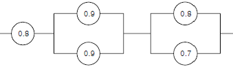
- 0.54
- 0.61
- 0.74
- 0.86
(정답률: 66%)
39. FTA 도표에 사용되는 다음의 논리기호 명칭은?
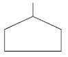
- 이하생략 사상
- 통상사상
- 결함사상
- 기본사상
(정답률: 74%)
40. 인체측정 자료를 통해 장비, 설비 등의 설계에 적용하기 위한 응용원칙에 해당하지 않는 것은?
- 조절식 설계
- 극단치를 이용한 설계
- 구조적 치수 기준의 설계
- 평균치를 기준으로 한 설계
(정답률: 46%)
3과목: 기계위험방지기술
41. 재해발생원인을 나타내는 위험의 5요소가 아닌 것은?
- 충격
- 말림
- 트랩
- 탈출
(정답률: 70%)
42. 산업안전기준에 관한 규칙에서 크레인, 간이리프트, 곤돌라, 승강기에 공통적으로 설치해야할 방호장치는?
- 과부하 방지장치
- 권과방지장치
- 제동장치
- 비상정지장치
(정답률: 45%)
43. 보일러 발생증기의 이상현상이 아닌 것은?
- 역화(Back fire)
- 프라이밍(Priming)
- 포밍(Forming)
- 캐리오버(Carry over)
(정답률: 65%)
44. 보일러의 방호장치에 속하지 않는 것은?
- 압력방출장치
- 절탄장치
- 압력제한스위치
- 저수위 안전장치
(정답률: 71%)
45. 양중기에서 화물의 하중을 직접 지지하는 와이어로프의 안전율(계수)은 얼마 이상으로 하는가?
- 3
- 5
- 7
- 9
(정답률: 77%)
46. 산업안전기준에 관한 규칙에 따르면 압력용기에 관한사항으로 틀린 것은?
- 일반적으로 압력방출장치는 1년에 1회 이상 교정받은 압력계로 토출압력시험 후 납으로 봉인 처리한다.
- 공정안전보고서 제출로 이행수준 평가결과가 우수한 사업장의 경우 압력방출장치는 6년에 1회 이상으로 토출압력을 사용할 수 있다.
- 압력용기에는 식별이 가능하도록 최고사용압력, 제조연월일, 제조회사명 등을 각인 표시하여야 한다.
- 다단형 압축기 또는 직렬로 접속된 공기압축기에는 과압방지 압력방출장치를 각단마다 설치하여야 한다.
(정답률: 74%)
47. 앞면 롤러의 표면원주 속도가 30m/min 이상일 때 산업안전보건법상 급정지장치의 설치거리는 앞면 롤러 원주의 얼마 이내로 규정되어 있는가?
- 1/2
- 1/2.5
- 1/3
- 1/3.5
(정답률: 64%)
48. 용접부에 생기는 잔류응력을 없애려면 어떤 열처리를 하면 되는가?
- 풀림
- 담금질
- 뜨임
- 불림
(정답률: 44%)
49. 롤러기의 맞물린 점에서 설치하는 가드의 일반적인 개구부 간격을 구하는 식이 맞는 것은? [단, Y : 가드 개구부 간격(안전간극 : mm), X : 가드와 위험점 간의 거리(안전거리 : mm, X<160mm 인 경우), 위험점이 전동체가 아닌 경우임]
- Y = 6 + 0.15X
- Y = 6 + 0.1X
- X = 6 + 0.1Y
- X = 6 + 0.15Y
(정답률: 69%)
50. 한국산업안전공단 프레스 방호장치의 선정, 설치 및 사용 기술지침에 따르면, 슬라이드 행정수가 100SPM 이하이거나, 행정길이가 50mm 이상의 프레스에 설치해야 하는 방호장치 방식은?
- 양수조작식
- 수인식
- 가드식
- 광전자식
(정답률: 49%)
51. 기계설계시 사용되는 안전계수를 나타내는 식에 해당하는 것은?
- 항복응력/극한강도
- 허용응력/극한강도
- 극한강도/항복응력
- 극한강도/허용응력
(정답률: 66%)
52. 가스집합 용접장치에 설치하는 저압용 수봉식 안전기의 유효수주는 얼마 이상을 유지하여야 하는가?
- 10mm
- 15mm
- 20mm
- 25mm
(정답률: 54%)
53. 작업자가 기계를 잘못 취급하여 불안전 행동이나 실수를 하여도 가계설비의 안전 기능이 적용되어 재해를 방지할수 있는 기능은?
- Fail Safe 기능
- Fool proof 기능
- 연동잠김 기능
- 자동송급출 기능
(정답률: 61%)
54. 다음 보기의 설명에 해당하는 기계는?
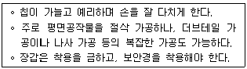
- 선반
- 밀링
- 플레이너
- 연삭기
(정답률: 63%)
55. 프레스 작업시 양수조작식 방호장치에서 양쪽 누름버튼간의 내측 최단거리는 몇 mm 이상이어야 하나?
- 300mm 이상
- 300mm 미만
- 250mm 이상
- 250mm 미만
(정답률: 60%)
56. 내압을 받고 있는 얇은 원통의 압력용기에서 원주방향 응력은 축방향 응력의 약 몇 배인가?
- 0.5
- 1.5
- 2
- 3
(정답률: 47%)
57. 기계ㆍ설비의 안전조건 중 외관상의 안전화에 해당하는 것은?
- 묻임형이나 덮개의 설치
- 원격제어 안전장치
- 보호구의 착용
- 긴급차단장치
(정답률: 63%)
58. 원통연삭기의 안전덮개 노출각도는 몇 도 이내로 해야 하는가?
- 60°
- 90°
- 150°
- 180°
(정답률: 42%)
59. 용접장치에 대하여 산업안전 기준에 맞는 것은?
- 아세틸렌 용접장치의 발생기실을 옥외에 설치한 때에는 그 개구부를 다른 건축물로부터 1m 이상 떨어지도록 하여야 한다.
- 가스집합장치로부터 3m 이내의 장소에서는 화기의 사용을 금지시킨다.
- 아세틸렌 발생기에서 10m 이내 또는 발생기실에서 4m 이내의 장소에서의 흡연행위를 금지시킨다.
- 아세틸렌 용접장치를 사용하여 금속의 용접ㆍ용단 또는 가열작업을 하는 경우에는 게이지 압력이 127킬로 파스칼을 초과하는 압력의 아세틸렌을 발생시켜 사용해서는 아니 된다.
(정답률: 71%)
60. 산업안전기준에 관한 규칙에 따르면, 프레스 등을 사용하여 작업을 하는 경우 작업시작 전 일반적인 점검 사항과 가장 거리가 먼 것은?
- 전단기의 칼날 및 테이블의 상태
- 프레스의 금형 및 고정볼트 상태
- 슬라이드 또는 칼날에 의한 위험방지 기구의 기능
- 전자밸브, 압력조정밸브 그 밖에 공압계통의 이상유무
(정답률: 65%)
4과목: 전기위험방지기술
61. 방폭구조 전기기계ㆍ기구의 선정기준과 관련이다. 다음 중 분진폭발위험장소의 분류에 속하지 않는 것은?
- 0종 장소
- 20종 장소
- 21종 장소
- 22종 장소
(정답률: 60%)
62. 다음 중 전압을 구분한 것으로 알맞은 것은?
- 전압이란 교류 600V 이하 직류는 교류의 √2 배 이하인 전압을 말한다.
- 고압이란 교류 7000V 이하, 직류 7500V 이하를 말한다.
- 특별고압이란 교류, 직류 모두 7000V를 초과하는 것을 말한다.
- 고압이란 교류, 직류 모두 7500V를 넘지 않는 것을 말한다.
(정답률: 59%)
63. 방폭구조 전기기계ㆍ기구의 기호와 기호의 의미가 서로 맞지 않는 것은?
- q : 충전방폭구조
- p : 내압방폭구조
- o : 유입방폭구조
- e : 안전증방폭구조
(정답률: 63%)
64. 자기방전식 제전기의 제전은 전기의 어떠한 현상을 이용한 것인가?
- 불꽃방전
- 자기유도현상
- 코로나방전
- 과도현상
(정답률: 44%)
65. 정전기의 발생요인과 가장 관계가 먼 것은?
- 물질의 특성
- 물질의 분리속도
- 물질의 표면상태
- 물질의 온도
(정답률: 62%)
66. 설비의 이상현상에 나타나는 아크(Arc)의 내용이 아닌 것은?
- 단락에 의한 아크
- 지락에 의한 아크
- 차단기에서의 아크
- 전선저항에 의한 아크
(정답률: 47%)
67. 인체가 100V 전로에 접촉되었을 경우 접촉저항이 500Ω이고, 인체저항이 500Ω일 때 인체에 통과하는 전류는 몇[mA] 인가?
- 250
- 200
- 150
- 100
(정답률: 50%)
68. 다음 중 가연성 증기나 먼지 등이 체류할 우려가 있는 장소의 전기회로에 설치하여야 하는 누전경보기의 수신부로 알맞은 것은?
- 차단기구를 가진 수신부
- 가스감지기를 가진 수신부
- 음향장치를 가진 수신부
- 분진농도 측정기를 가진 수신부
(정답률: 55%)
69. 인체의 저항을 500Ω으로 볼 때 심실세동을 일으키는 전류에서의 전기에너지는 약 몇 [J]인가? (단, 심실세동전류는
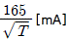
이며, 통전시간 T는1초, 전원은 정현파 교류이다.)- 3.3
- 13.0
- 13.6
- 272.2
(정답률: 70%)
70. 다음 중 공기 차단기의 문자 기호로 알맞은 것은?
- ABB
- PCS
- OCB
- ACB
(정답률: 35%)
71. 인체운동의 자유를 잃지 않는 최대한도의 전류를 이탈전류(마비한계전류)라 하는데 이 전류의 범위로 가장 알맞은 것은?
- 10 ~ 15[mA]
- 15 ~ 20[mA]
- 20 ~ 25[mA]
- 25 ~ 30[mA]
(정답률: 52%)
72. 다음 중 고압활선 작업시 감전의 위험이 발생할 우려가 있는 때의 조치사항에 포함되지 않는 것은?
- 접근 한계거리 유지
- 절연용 보호구 착용
- 활선작업용 기구 사용
- 절연용 방호용구 설치
(정답률: 40%)
73. 접지공사의 종류에 따른 접지선의 굵기가 맞게 짝지워진 것은?
- 제 1종 지름 - 6mm2이상의 연동선
- 제 2종 지름 - 2.5mm2이상의 연동선
- 제 3종 지름 - 1.5mm2이상의 연동선
- 특별 제3종 - 지름 4.0mm2 이상의 연동선
(정답률: 49%)
74. 가스폭발 위험장소 중 1종 장소의 방폭구조 전기기계ㆍ기구의 선정기준에 속하지 않는 것은?
- 내압방폭구조
- 압력방폭구조
- 유입방폭구조
- 비점화방폭구조
(정답률: 65%)
75. 금속제 외함을 가지는 사용전압이 몇 [V] 를 초과하는 저압의 기계ㆍ기구로서 사람이 쉽게 접촉할 우려가 있는 곳에 전기를 공급하는 전로에는 전로에 지락이 생긴 경우에 자동적으로 전로를 차단하는 장치를 하여야 하는가?
- 30
- 60
- 150
- 300
(정답률: 37%)
76. 다음 중 과전류에 의한 전선의 인화로부터 용단에 이르기 까지 각 단계별 기준으로 옳지 않은 것은? (단 전선전류 밀도는 A/mm2이다.)
- 인화단계 : 40 ~ 43A/mm2
- 착화단계 : 43 ~ 60A/mm2
- 발화단계 : 60 ~ 150A/mm2
- 용단단계 : 120A/mm2 이상
(정답률: 70%)
77. 활선 작업시 필요한 보호구 중 가장 거리가 먼 것은?
- 내전압 고무장갑
- 어깨받이
- 대전방지용 구두
- 안전모
(정답률: 54%)
78. 동작시 아크를 발생하는 고압용 개폐기는 목재의 벽 또는 천장 기타의 인화성 물체로부터 몇 m 이상 떼어 놓아야 하는가?
- 0.6m 이상
- 1m 이상
- 1.2m 이상
- 2m 이상
(정답률: 52%)
79. 다음 중 전기설비 사용장소의 폭발위험성에 대한 위험장소 판정시 고려해야 할 사항으로 거리가 먼 것은?
- 위험가스의 현존 가능성
- 위험증기의 양
- 가스의 종류
- 전기설비의 규모
(정답률: 56%)
80. 절연성이 높은 유전성 액체를 다룰 때 정전기 재해의 방지대책으로 옳지 않은 것은?
- 가스용기, 탱크롤리 등의 도체부는 접지한다.
- 도전화를 착용하여 접지한 것과 같은 효과를 갖도록 한다.
- 유동대전이 심하지 않은 도전성 위험물의 배관 유속 은 매초 7m 이상으로 한다.
- 탱크의 주입구는 위험물이 수평방향으로 유입하도록 한다.
(정답률: 65%)
5과목: 화학설비위험방지기술
81. 다음 중 분진폭발의 특징으로 옳은 것은?
- 가스폭발보다 연소시간이 짧고, 발생에너지가 작다.
- 압력의 파급속도보다 화염의 파급속도가 빠르다.
- 가스폭발에 비하여 불완전 연소가 적게 발생한다.
- 주위의 분진에 의해 2차, 3차의 폭발로 파급될 수 있다.
(정답률: 66%)
82. 입자상의 물질 중 고체 상태의 물질이 액체화된 다음 증기화되고, 증기화된 물질의 응축 및 산화로 인하여 생기는 고체상의 미립자를 무엇이라 하는가?
- Mist
- Fume
- Smoke
- Soot
(정답률: 63%)
83. 독성물질을 실험동물에게 경구 또는 경피로 투여하였을때 실험동물의 50%를 사망시킬 수 있는 물질의 양을 나타내는 기호는?
- LD50
- LC50
- ED50
- TD50
(정답률: 61%)
84. 부탄(C4H10)의 연소에 필요한 최소산소농도(MOC)를 추정하여 계산하면 약 몇 vol% 인가? (단, 부탄의 폭발하한계는 공기 중에서 1.6vol%이다.)
- 5.6
- 7.8
- 10.4
- 14.1
(정답률: 46%)
85. 반응기를 조작방법에 따라 분류할 때 반응기의 한 쪽에서는 원료를 계속적으로 유입하는 동시에 다른 쪽에서는 반응생성 물질을 유출시키는 형식의 반응기를 무엇이라 하는가?
- 관형 반응기
- 연속식 반응기
- 회분식 반응기
- 교반조형 반응기
(정답률: 49%)
86. 다음 중 폭발 또는 화재가 발생할 우려가 있는 건조설비의 구조로 적절하지 않은 것은?
- 위험건조설비의 상부를 가벼운 재료로 만들었다.
- 건조설비의 외면을 불연성 재료로 하였다.
- 건조설비의 내부를 청소가 쉬운 구조로 하였다.
- 위험건조설비의 열원으로 직화를 사용하였다.
(정답률: 61%)
87. 다음 중 자연발화에 대한 설명으로 틀린 것은?
- 분해열에 의해 자연발화가 발생할 수 있다.
- 입자의 표면적이 넓을수록 자연발화가 발생하기 쉽다.
- 자연발화가 발생하지 않기 위해 습도를 높게 유지시킨다.
- 열의 축적은 자연발화를 일으킬 수 있는 인자이다
(정답률: 64%)
88. 다음 중 유류화재의 화재급수에 해당하는 것은?
- A급
- B급
- C급
- D급
(정답률: 71%)
89. 다음 중 증류탑의 보수에 있어서 일상점검항목에 해당하는 것은?
- 트레이(tray)의 부식상태
- 라이닝의 코팅상황
- 기초볼트의 이상 유무
- 용접선 상태의 이상 유무
(정답률: 49%)
90. 다음 중 압축하면 폭발할 위험성이 높아서 아세톤 등에 용해시켜 다공성 물질과 함께 저장하는 물질은?
- 염소
- 에탄
- 아세틸렌
- 수소
(정답률: 64%)
91. 할로겐(Halogen) 소화기에 사용되는 약제의 원소 중 연소의 억제 효과가 가장 큰 것은?
- 염소(CI)
- 불소(F)
- 탄소(C)
- 브롬(Br)
(정답률: 46%)
92. 다음 중 일반적으로 가연성 기체의 폭발한계에 영향을 미치는 인자로서 가장 거리가 먼 것은?
- 압력
- 온도
- 고유저항
- 산소농도
(정답률: 67%)
93. 각 물질의 폭발한계가 다음[표]와 같을 때 위험도가 큰것부터 작은 순서로 올바르게 나열한 것은?
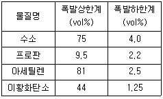
- 수소 > 아세틸렌 > 이황화탄소 > 프로판
- 이황화탄소 > 아세틸렌 > 수소 > 프로판
- 아세틸렌 > 이황화탄소 > 프로판 > 수소
- 프로판 > 이황화탄소 > 아세틸렌 > 수소
(정답률: 56%)
94. 유류저장탱크에서 화염의 차단을 목적으로 외부에 증기를 방출하기도 하고 탱크내 외기를 흡입하기도 하는 부분에 설치하는 안전장치는?
- safety valve
- gate valve
- ventstack
- flame arrester
(정답률: 61%)
95. 다음 중 위험물의 저장 및 취급방법이 잘못된 것은?
- 칼륨 : 알코올 속에 저장한다.
- 피크르산 : 운반시 10 ~ 20% 물로 젖게 한다.
- 황린 : 반드시 저장용기 중에는 물을 넣어 보관한다.
- 니트로셀룰로오스 : 건조상태에 이르면 즉시 습한 상태로 유지시킨다.
(정답률: 37%)
96. 산업안전보건법에 의한 공정안전보고서에 포함되어야하는 내용 중 공정안전자료의 세부내용에 해당하지 않는 것은?
- 유해ㆍ위험설비의 목록 및 사양
- 안전운전 지침서
- 각종 건물ㆍ설비의 배치도
- 위험설비의 안전설계ㆍ제작 및 설치관련 지침서
(정답률: 58%)
97. 다음 중 소염거리(quenching distance) 또는 소염직경(quenching diameter)을 이용한 것과 가장 거리가 먼 것은?
- 화염방지기
- 역화방지기
- 방폭전기기기
- 안전밸브
(정답률: 50%)
98. 다음 중 물과 반응하여 수소가스를 발생시키지 않는 물질은?
- Mg
- Zn
- Cu
- Li
(정답률: 59%)
99. 다음 중 송풍기의 상사법칙을 잘못 설명한 것은?
- 송풍량은 회전수와 비례한다.
- 정압은 회전수의 제곱에 비례한다.
- 축동력은 회전수의 세제곱에 비례한다.
- 정압은 임펠러 직경의 세제곱에 비례한다.
(정답률: 54%)
100. 프로판과 메탄의 폭발하한계는 각각 2.5, 5.0vol% 이다. 프로판과 메탄이 3 : 1 의 체적비로 혼합되어 있다면이 혼합가스의 폭발하한계는 약 몇 vol% 인가?(단, 모든 상태는 상온, 상압 상태이다.)
- 2.9
- 3.3
- 3.8
- 4.0
(정답률: 46%)
6과목: 건설안전기술
101. 다음 중 달비계의 달기체인의 사용금지규정이 아닌 것은?
- 늘어난 체인길이의 증가가 제조된 때 길이의 5%를 초과한 것
- 링의 단면지름의 감소가 제조된 때 지름의 10%를 초과한 것
- 균열이 있는 것
- 이음매가 있는 것
(정답률: 25%)
102. 안전모의 종류 중 물체의 낙하 및 비래에 의한 위험을 방지 또는 경감하고, 머리부위 감전에 의한 위험을 방지하기 위한 것은?
- A형
- AB형
- AE형
- AF형
(정답률: 70%)
103. 콘크리트 타설 이후 발생되는 블리딩(bleeding)을 방지하기 위한 대책으로 옳지 않은 것은?
- 단위 수량을 적게 한다.
- 분말도가 낮은 시멘트를 사용한다.
- 1회 타설 높이를 작게 하고, 과도한 다짐은 피한다.
- AE제나 포졸란 등을 사용한다.
(정답률: 58%)
104. 이동식 비계의 사용시 준수해야 할 사항 중 옳지 않은 것은?
- 안전담당자의 지휘하에 작업한다.
- 최대적재하중을 표시하여야 한다.
- 비계의 최대높이는 밑변 최소폭의 5배 이하이어야 한다.
- 불의의 이동을 방지하기 위한 제동장치를 갖추어야 한다.
(정답률: 64%)
1⑤. 다음 중 개착식 굴착방법과 거리가 먼 것은?
- 타이로드 공법
- 어스앵커 공법
- 버팀대 공법
- TBM 공법
(정답률: 42%)
106. 로드(rod)ㆍ유압잭(Jack) 등을 이용하여 거푸집을 연속적으로 이동시키면서 콘크리트를 타설할 때 사용되는 것으로 silo 공사 등에 적합한 거푸집은?
- 메탈폼
- 슬라이딩폼
- 워플폼
- 페코빔
(정답률: 66%)
107. 크레인 등 건설장비의 가공전선로 접근시 안전대책이 아닌 것은?
- 안전 이격 거리를 유지하고 작업한다.
- 장비의 조립, 준비시부터 가공전선로에 대한 감전방지 수단을 강구한다.
- 장비 사용 현장의 장애물, 위험물 등을 점검 후 작업 계획을 세운다.
- 장비를 가공전선로 밑에 보관한다.
(정답률: 71%)
108. 단면의 지름이 d인 강봉의 허용인장력이 400kg 이라면 지름이 d/2 인 강봉의 허용인장력은 얼마인가?
- 100kg
- 200kg
- 400kg
- 800kg
(정답률: 37%)
109. 다음 중 옹벽의 안정 검토조건 중 가장 거리가 먼 것은?
- 전도(overturning)
- 전단(shearing)
- 활동(sliding)
- 지지력(bearing)
(정답률: 34%)
110. 토공사에서 흙막이판의 설치 및 제거에 대한 설명으로 옳지 않은 것은?
- 흙막이판은 굴착 후 신속히 설치하며, 인접한 흙막이판 사이에 틈새가 발생하지 않도록 한다.
- 흙막이판은 최종 굴착깊이의 측압강도에 계산된 판의 두께를 전 흙막이벽에 사용한다.
- 흙막이판과 축조물과의 사이에는 버팀대, 띠장을 떼어낸 후 흙 또는 모래로 되메우기 한다.
- 흙막이판 배면은 신속히 양질의 토사로 되메움하거나 소일 시멘트로 채운다.
(정답률: 60%)
111. 다음 중 추락재해를 방지하기 위한 고소작업 감소대책으로 옳은 것은?
- 방망(안전망)설치
- 철골기둥과 빔을 일체 구조화
- 안전대 사용
- 비계 등에 의한 작업대 설치
(정답률: 53%)
112. 항타기 또는 항발기에 사용되는 권상용 와이어로프의 안전계수는 최소 얼마 이상이어야 하는가?
- 3
- 4
- 5
- 6
(정답률: 66%)
113. 다음 중 토사붕괴의 예방대책으로 옳지 않은 것은?
- 적절한 경사면의 기울기를 계획한다.
- 활동할 가능성이 있는 토석은 제거하여야 한다.
- 지하수위를 높인다.
- 말뚝(강관, H형강, 철근 콘크리트)을 타입하여 지반을 강화시킨다.
(정답률: 75%)
114. 가설통로에 있어 경사로 폭의 기준은?
- 90cm 이상
- 90cm 이하
- 100cm 이상
- 100cm 이하
(정답률: 60%)
115. 사람이나 화물을 운반하는 것을 목적으로 하는 기계설비인 리프트의 종류가 아닌 것은?
- 건설작업용 리프트
- 상용 리프트
- 일반작업용 리프트
- 간이 리프트
(정답률: 47%)
116. 차량계 하역운반기계의 안전조치사항 중 옳지 않는 것은?
- 시속 10km를 초과하는 차량계 하역운반기계를 사용하여 작업할 경우 제한속도를 정하고 운전자가 이를 준수할 것
- 운전자가 운전위치를 이탈할 경우에는 포크 및 버킷등의 하역장치를 가장 높은 위치에 둘 것
- 화물 적재시 편하중이 생기지 않도록 적재할 것
- 작업을 하는 때에는 승차석 외의 위치에 근로자를 탑승시키지 말 것
(정답률: 70%)
117. 산업안전기준에 관한 규칙에서 정하는 승강기 와이어 로프의 안전계수는 최소 얼마 이상인가?
- 4
- 5
- 8
- 10
(정답률: 49%)
118. 도시가스관을 매설하기 위해 지반굴착을 하는 경우에 풍화암의 굴착면 붕괴에 따른 재해를 예방하기 위한 굴착면의 적정한 경사기준은?
- 1 : 1
- 1 : 0.8
- 1 : 0.5
- 1 : 0.3
(정답률: 65%)
119. 다음 중 산업안전지도사가 행하는 직무에 해당되지 않는 것은?
- 공정상의 안전에 관한 평가ㆍ지도
- 작업환경의 평가 및 개선 지도
- 유해ㆍ위험의 방지대책에 관한 평가ㆍ지도
- 공정상의 안전에 관련된 계획서 및 보고서 작성
(정답률: 32%)
120. 터널공사시 인화성 가스가 농도 이상으로 상승하는 것을 조기에 파악하기 위하여 자동경보장치를 설치하여야 하는데 작업시작 전에 점검해야 할 사항이 아닌 것은?
- 계기의 이상유무
- 발열 여부
- 검지부의 이상유무
- 경보장치의 작동상태
(정답률: 63%)